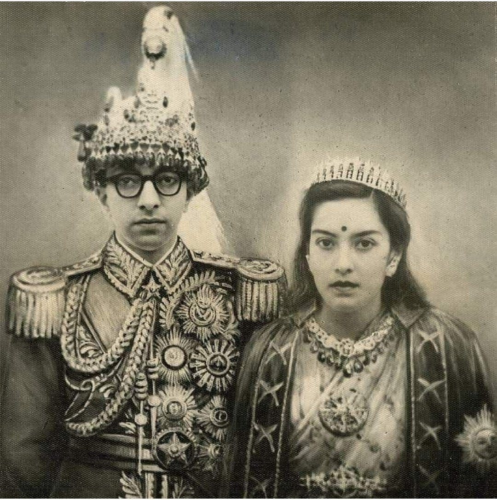

Constitutional Monarchy
The introduction of a democratic political system in Nepal, a country accustomed to autocracy and with no deep democratic tradition or experience, proved a formidable task. A constitution was finally approved in 1959, under which general elections for a national assembly were held. The NC won an overwhelming victory and was entrusted with the formation of Nepal’s first popular government. But persistent controversy between the cabinet and King Mahendra (reigned 1955–72) led the king to dismiss the Nepali Congress government in December 1960 and to imprison most of the party’s leaders. The constitution of 1959 was abolished in 1962, and a new constitution was promulgated that established the crown as the real source of authority. King Mahendra obtained both Indian and Chinese acceptance of his regime, and the internal opposition was weak, disorganized, and discouraged. Mahendra died in January 1972 and was succeeded by his son Birendra, who was crowned in 1975. Throughout the 1970s King Birendra sought to expedite economic development programs while maintaining the “nonparty” political system established by his father. The results were disappointing on both accounts, and by 1979 a systemic crisis was evident. To meet the first serious political challenge to the monarchy since 1960, King Birendra announced in May 1979 that a national referendum would be held to decide between a nonparty and multiparty (by implication, parliamentary) political system. In the referendum, which was held in May 1980, the political groups supporting the existing nonparty system won by the relatively small margin of 55 percent, accurately reflecting the sharp differences in the country on basic political issues. It was in this context that King Birendra decided in 1980 to retain the 1962 constitution but to liberalize the political system by providing for direct popular election of the National Assembly. The government also permitted the “illegal” political parties, such as the NC, to function under only minimal constraints. Elections were still formally held on a “partyless” basis, but many candidates ran informally and openly as members of political parties. This partial movement toward a democratic parliamentary system satisfied neither the supporters of a multiparty constitutional monarchy or several more radical leftist factions, and in February 1990 a coalition of centrist and leftist opposition forces began a campaign demanding basic political reforms. A series of protests and strikes followed nationwide, and the royal government’s efforts to suppress the movement with force were ineffectual. In April, as the situation in Kathmandu Valley worsened, King Birendra lifted the ban on political parties, abrogated the more repressive security ordinances, and on April 16 appointed a coalition interim government headed by the president of the NC, Krishna Prasad Bhattarai, but also including the moderate faction of the communist movement, the United Leftist Front. The policy objectives of the interim government were “to maintain law and order, develop a multiparty system on the basis of constitutional monarchy, draft a new constitution, and hold general elections” to a parliament. Within a year, all four tasks were accomplished with remarkable success despite the broad divergence of views among the major political organizations. A draft of the new constitution, prepared by a broadly representative government commission, was submitted to the palace and the cabinet on September 10, 1990. In November, following two months of vigorous debate on a number of key issues—including the role of the king, the development of a secular state, emergency powers, and the status of Nepal’s many languages—an amended version of the constitution was promulgated by King Birendra that provided for both a constitutional monarchy and a multiparty parliamentary political system. General elections held on May 12, 1991, gave the NC a majority in parliament (110 of 205 seats), but the moderate Communist Party of Nepal (Unified Marxist-Leninist)—CPN (UML)—with 69 seats, emerged as a strong opposition party. The two “Pancha” parties usually associated with the old system won only four seats. The elections were thus perceived to constitute a strong endorsement of the 1990 political changes, and G.P. Koirala, the brother of Nepal’s first elected prime minister (1959–60), was nominated by the NC and appointed by the king to head the new elected government. Nepal emerged from this period of rapid political change facing a multitude of economic and social problems; among these were a stagnant economy and a variety of regional ethnic and religious movements, some of whose basic demands were not acceptable to the country’s Hindu majority. Although overwhelming support existed for the new democratic constitutional monarchy system, at both the party and the public level, the democratic movement itself remained badly fractionalized and antagonistic, making more difficult the new government’s attempt to introduce the kind of hard-hitting economic and social policies the panchayat governments had carefully avoided in an effort to mollify several small but important interest groups.